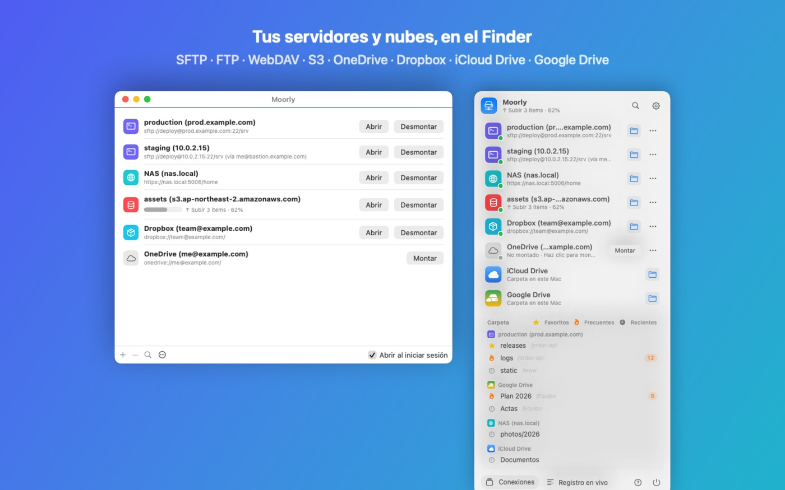
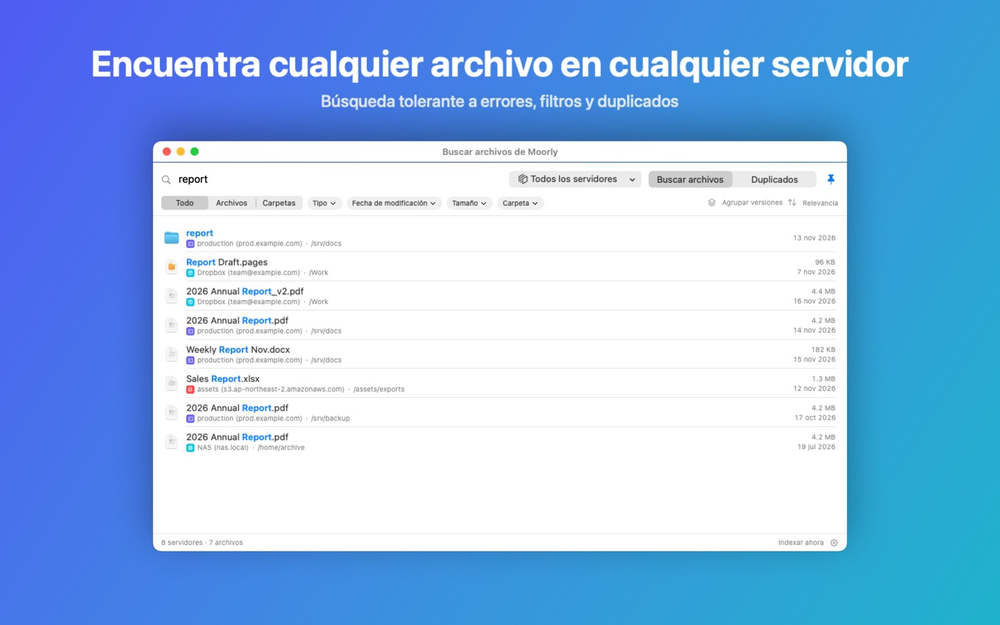
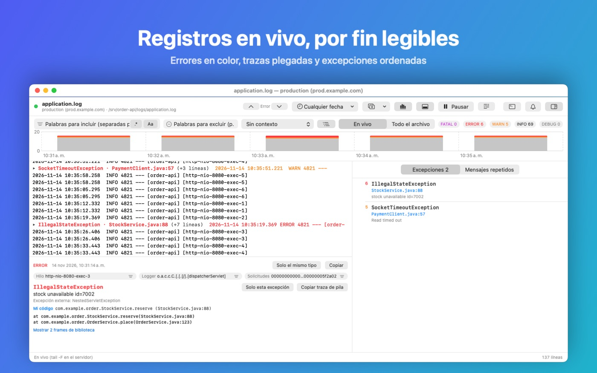

Guía del usuario de Moorly
Moorly coloca servidores SFTP, FTP, WebDAV y S3, OneDrive y Dropbox en la barra lateral del Finder para que puedas abrir y guardar archivos como si estuvieran en tu Mac. También puede trabajar con carpetas que ya están en tu Mac, como iCloud Drive o la carpeta de la app Google Drive.
Primeros pasos

- Haz clic en el icono de Moorly de la barra de menús y abre Conexiones.
- Haz clic en + (⌘N) y elige un servicio.
- Servidores (SFTP, FTP, WebDAV, S3): introduce la dirección, el nombre de usuario y la contraseña o la clave, y haz clic en Probar conexión y guardar.
Nubes (OneDrive, Dropbox): haz clic en Iniciar sesión con Microsoft (o Dropbox)…. La página de inicio de sesión se abre en el navegador. Después de iniciar sesión y permitir el acceso, haz clic en Abrir cuando el navegador te pregunte si quieres abrir Moorly, comprueba el nombre y haz clic en Guardar. - Haz clic en Montar en la lista. La conexión aparece en Ubicaciones, en la barra lateral del Finder.
~/.ssh/config. Los servidores SFTP se comprueban la primera vez que los montas.Consejos para SFTP
- Usa Importar desde ~/.ssh/config… para reutilizar los ajustes de host que ya tienes.
- Si necesitas pasar por un host de salto, introdúcelo en Avanzado › Host de salto (jump host).
- Al montar la raíz del servidor (
/),/procy/sysse ocultan (son carpetas virtuales que cambian constantemente).
Panel de la barra de menús
Haz clic en el icono de Moorly de la barra de menús para abrir el panel. (Al hacer clic con la tecla Control o ⌥ pulsada, se abre el menú clásico).
- Servidores: el punto de cada icono indica el estado: verde, montado; naranja, hay un problema; gris, no montado. Haz clic en una fila para abrir la última carpeta que viste. En … encontrarás Desmontar, Actualizar, Analizar el uso del disco, Abrir en Terminal y más.
- Carpetas: para cada servidor, ★ Favoritos · 🔥 Frecuentes · 🕘 Recientes. Mantén el puntero sobre una carpeta y haz clic en ☆ para añadirla a favoritos o quitarla.
- Frecuentes muestra las carpetas que has abierto al menos dos veces en los últimos 30 días, empezando por las más abiertas. Define cuántas se muestran por servidor en Ajustes › Menú.
- Las carpetas que abre Moorly conservan su historial, así que ◀ (Atrás) y ⌘↑ del Finder te llevan a la carpeta contenedora.
- Transferencias: haz clic en ⇅ arriba del panel (o en Transferencias… del menú contextual) para ver subidas y descargas, con progreso, motivo de los errores, Reintentar y Pausar por servidor.
- Sincronización de carpetas: desde el menú … de un servidor o Sincronización de carpetas… en el menú contextual, compara una carpeta del Mac con una del servidor y transfiere solo lo que cambió. Comparar muestra antes una vista previa; los archivos cambiados por separado en el destino se indican como conflictos en lugar de sobrescribirse.
Muchos servidores: árbol y pestañas
En Ajustes › Panel de la barra de menús › Visualización, elige Lista, Árbol o Pestañas.
- Grupos: define un grupo (por ejemplo, Producción o Desarrollo) en el campo Grupo del editor de conexión o desde … › Grupo en el servidor. Los servidores sin grupo se agrupan automáticamente en Servidor (SFTP, FTP, WebDAV) y Nube (S3, OneDrive, Dropbox); las carpetas locales tienen su propio grupo.
- Árbol: pliega y despliega grupos y servidores con ▸. Al desplegar un servidor, sus carpetas favoritas, frecuentes y recientes aparecen justo debajo. El estado se recuerda.
- Pestañas: haz clic en una pestaña de arriba (Todo o un grupo) para ver solo los servidores y carpetas de ese grupo.
- Con 9 o más servidores y carpetas locales aparece arriba el campo Filtrar por nombre de servidor. Si la lista es más alta que la pantalla, se desplaza dentro del panel.
Arrastrar para subir
Cuando coges un archivo en el Finder, aparece una pequeña zona “Subir con Moorly” debajo del icono de la barra de menús. Arrastra el archivo sobre ella para ver las carpetas de cada servidor.
- Suéltalo sobre una carpeta para subirlo ahí. Si ya existe un archivo con el mismo nombre, Moorly conserva ambos (“nombre 2”).
- Suéltalo sobre el título de un servidor para elegir dónde subirlo.
- Para ver la lista completa desde el principio, cambia Ajustes › Panel para soltar › Estilo.
Carpetas locales (iCloud Drive · Google Drive · Box · carpetas compartidas)
Trabaja con carpetas que ya están en tu Mac como si fueran servidores. Aparecen en Recientes, Frecuentes y Favoritos, aceptan archivos que sueltes en ellas y se incluyen en la búsqueda de archivos.
- Haz clic en Ajustes › Carpetas locales › Añadir carpeta…
- Elige la carpeta y haz clic en Añadir esta carpeta. (Por seguridad, macOS requiere que elijas cada carpeta una vez).
| Para añadir | Elige |
|---|---|
| iCloud Drive | El botón Añadir iCloud Drive… (o ~/Library/Mobile Documents/com~apple~CloudDocs) |
| Google Drive | Instala la app Google Drive y elige ~/Library/CloudStorage/GoogleDrive-tu-cuenta |
| Box · pCloud · MEGA | Instala la app y elige la carpeta que crea (normalmente dentro de ~/Library/CloudStorage) |
| Carpeta compartida de la empresa (SMB) | Conéctate en el Finder con Ir › Conectarse al servidor y elige /Volumes/nombre-del-recurso |
Menú de función rápida del Finder
Haz clic con la tecla Control pulsada en un archivo o una carpeta de un servidor montado con Moorly para ver los elementos Moorly:.
| Elemento | Selección | Qué hace |
|---|---|---|
| Ver registro en tiempo real | 1 archivo | Sigue el registro en el servidor, como tail -F |
| Buscar el mismo archivo | 1 archivo | Busca archivos con el mismo contenido en tus servidores |
| Abrir en Terminal | 1 elemento | Una sesión ssh en esa carpeta (SFTP) |
| Analizar uso del disco | 1 carpeta | Muestra qué carpetas y archivos ocupan espacio |
| Añadir a favoritos | 1 carpeta | La añade a ★ en el panel de la barra de menús |
| Copiar enlace para compartir | 1 elemento | Un enlace para compartir de S3, OneDrive o Dropbox |
| Comprimir como tar.gz/zip en el servidor, Descomprimir en el servidor, Duplicar en el servidor | 1 o más | Se hace en el servidor, sin descargar nada (SFTP) |
| Conservar siempre en este Mac / Dejar de conservar | 1 o más | Descarga por adelantado y mantiene los cambios del servidor, así que se abre aunque no haya conexión con el servidor. En una carpeta, se aplica a todo su contenido |
Si una acción no está disponible para el tipo de servidor, Moorly te indica el motivo.
Bóvedas de Cryptomator (carpetas cifradas)
Los archivos se cifran en este Mac antes de subirse. El servidor solo guarda nombres y contenidos ilegibles, así que ni tu proveedor en la nube, ni el administrador del servidor, ni quien robe tu cuenta puede verlos. Las bóvedas usan el formato estándar de Cryptomator, por lo que las apps de Cryptomator (Windows, iPhone, Android) pueden abrir la misma bóveda.
- En el panel, haz clic en … junto a un servidor › Bóveda de Cryptomator… (o … › Abrir o crear bóveda de Cryptomator… en la ventana de conexiones).
- Abrir bóveda existente: introduce la carpeta de la bóveda (la que contiene
vault.cryptomator) y su contraseña. Crear bóveda nueva: introduce una carpeta y una contraseña de al menos 8 caracteres. - La bóveda aparece en el Finder como una conexión propia. Dentro, abre y guarda archivos como en cualquier carpeta.
- Se ocultan los nombres y el contenido. El número de archivos, su tamaño aproximado y la fecha de modificación siguen visibles en el servidor.
- Dentro de una bóveda no se puede comprimir en el servidor ni usar enlaces para compartir o registros en directo (el servidor no puede leer los archivos).
- Compatible con: bóvedas de Cryptomator formato 8 con AES-GCM (el valor predeterminado actual de Cryptomator).
Búsqueda de archivos

Haz clic en 🔍 en el panel de la barra de menús o pulsa ⌃⌥⌘F desde cualquier lugar. Encuentra archivos por su nombre incluso en carpetas que no has abierto.
- Tolera espacios y errores tipográficos.
- Filtra con Todo / Archivos / Carpetas debajo del campo de búsqueda, y por tipo, fecha, tamaño o carpeta.
- Condiciones:
ext:pdfsize:>100mbkind:folderfolder:/var/logserver:proddate:week - La pestaña Duplicados encuentra el mismo archivo en varios servidores.
- Activa 📌 arriba a la derecha para mantener la ventana por encima de otras apps.
- Elige qué indexar en cada servidor en Ajustes › Buscar archivos. En SFTP y FTP se omiten carpetas del sistema como
/usr,/procy/var/log.
Registros en vivo

Panel de la barra de menús › Registro en vivo › Abrir archivo de registro…, o haz clic con la tecla Control pulsada en un archivo › Moorly: Ver registro en tiempo real.
- Ruta o nombre: introduce una ruta como
/var/log/syslog, o solo un nombre comoapp, y elige en la lista de abajo (primero los modificados más recientemente). - Introduce una carpeta para seguir el archivo modificado más recientemente en ella y en sus subcarpetas. Cuando aparece un archivo más nuevo (por ejemplo, un nuevo registro diario), Moorly cambia a él en menos de 30 segundos. Puedes añadir un nombre:
/app/log/*api* - Elige varios servidores para combinar sus registros por hora.
- Filtros, palabras excluidas, líneas de contexto, colores por nivel, agrupación de mensajes repetidos, gráfico cronológico, pausa (⌘P), modo oscuro 🌙 y mantener encima 📌.
- 🔔 Vigilar: recibe una notificación de macOS ante ciertas palabras o picos de errores (sigue funcionando después de cerrar la ventana).
tail -F en el servidor, así que las líneas aparecen casi al instante. En cuentas que no pueden ejecutar comandos y en otros tipos de servidor, Moorly lee los datos nuevos cada 1,5 segundos.Terminal (iTerm2 · Terminal)
- Haz clic con la tecla Control pulsada en un servidor SFTP de la lista de conexiones › Abrir en iTerm2 (o en … en el panel). Elige la app en Ajustes › Terminal.
- Configurar acceso sin contraseña… crea una clave SSH para este Mac (por omisión,
~/.ssh/moorly_ed25519) y añade una línea de clave pública a~/.ssh/authorized_keysen el servidor. A partir de entonces, el terminal no te pide la contraseña.
Permisos: ¿por qué pregunta macOS?
| Lo que pregunta macOS | Por qué |
|---|---|
| “Moorly quiere controlar Finder” | Para registrar las carpetas recientes y frecuentes, Moorly comprueba qué carpeta muestra la ventana del Finder en primer plano. Solo lo hace mientras el Finder está en primer plano y nunca toca tus archivos. Para desactivarlo: Ajustes › Menú › Registrar las carpetas abiertas en el Finder |
| “Moorly quiere controlar iTerm2 (Terminal)” | Para enviar un comando ssh cuando abres un servidor en el terminal. |
| Un selector de carpetas | Tú eliges exactamente qué carpetas puede usar Moorly, como las carpetas locales o dónde guardar una clave SSH. |
| Notificaciones | Avisos de vigilancia de registros. |
Si lo rechazaste, cámbialo en Ajustes del Sistema › Privacidad y seguridad › Automatización.
Gratis y Pro
La versión gratuita incluye todas las funciones con una conexión de cada tipo (SFTP, FTP, WebDAV, S3, OneDrive, Dropbox), una carpeta local, una vigilancia de registros y una bóveda de Cryptomator. Una compra única dentro de la app, Moorly Pro, elimina estos límites: conexiones, carpetas locales, vigilancias de registros y bóvedas ilimitadas.
Preguntas frecuentes
Al guardar una conexión de OneDrive aparece “Esta cuenta no tiene OneDrive”
La cuenta personal nunca ha abierto OneDrive. Inicia sesión una vez en onedrive.live.com desde el navegador y vuelve a intentarlo. Las cuentas profesionales o educativas necesitan una licencia de OneDrive (Microsoft 365).
Mi cuenta de Microsoft del trabajo está bloqueada (“Se necesita la aprobación del administrador”)
Tu organización bloquea las apps externas. Pide a tu administrador que apruebe Moorly.
Aparece un aviso (⚠︎) en la lista
No se ha podido acceder al servidor o tu sesión ha caducado. Elige … › Reintentar en el panel, o haz clic en el aviso para volver a iniciar sesión.
Las carpetas que abro en el Finder no aparecen en Recientes
Asegúrate de que el control del Finder está permitido (consulta Permisos). Si el panel muestra un aviso naranja, haz clic en Abrir ajustes de Automatización….
No hay elementos de Moorly en el menú de función rápida
Solo aparecen dentro de los servidores montados con Moorly, no en carpetas locales como iCloud Drive.
Falla SFTP a través de un host de salto
El sshd del host de salto debe permitir el reenvío TCP (AllowTcpForwarding yes, el valor por omisión). Como host, introduce la dirección tal como se ve desde el host de salto.
No recibo notificaciones de vigilancia de registros
Permite las notificaciones en Ajustes del Sistema › Notificaciones › Moorly.
Contacto
Escribe a giveing7777@gmail.com o abre una incidencia en GitHub Issues indicando tu versión de macOS y lo que ha ocurrido. No incluyas contraseñas ni direcciones de servidores.